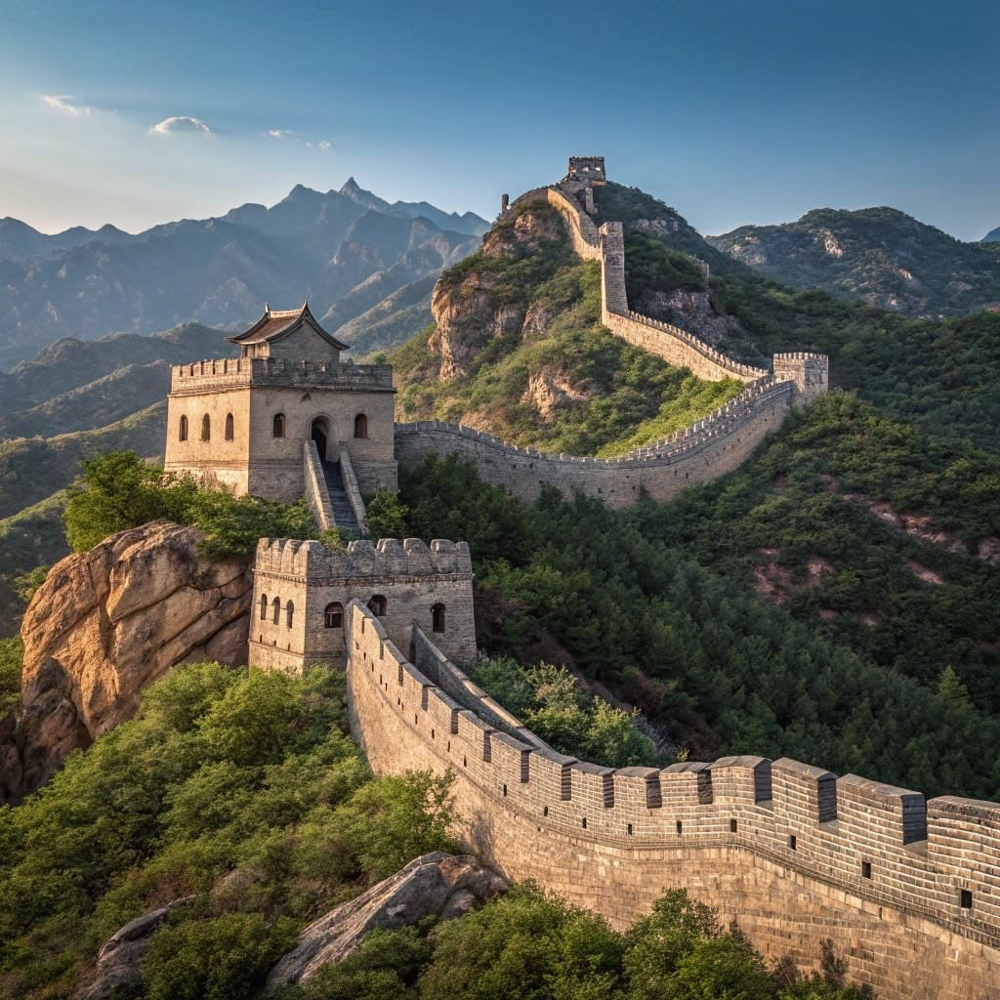

อารยธรรมจีน

อารยธรรมจีนเป็นหนึ่งในอารยธรรมเก่าแก่ของโลก มีพัฒนาการบริเวณลุ่มแม่น้ำฮวงโหและแม่น้ำแยงซี ชาวจีนมีความเจริญด้านการปกครอง ปรัชญา วิทยาศาสตร์ และเทคโนโลยี มีสิ่งประดิษฐ์สำคัญหลายอย่าง เช่น กระดาษ การพิมพ์ เข็มทิศ และดินปืน ซึ่งมีบทบาทสำคัญต่อการเปลี่ยนแปลงของโลก